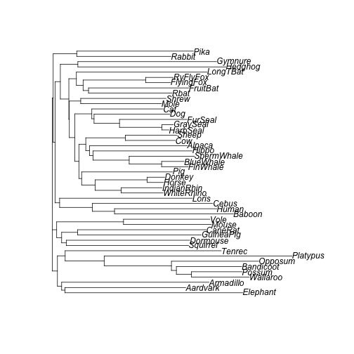
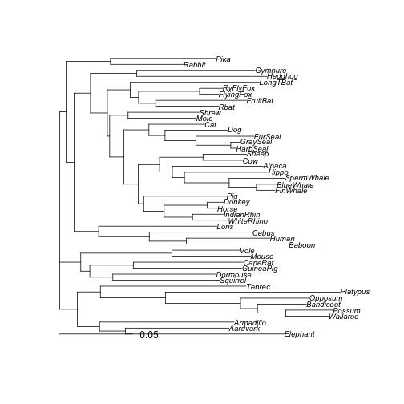

Ideally, to perform a phylogenetic dating analysis, we require some estimate of initial branch lengths.
datelife does this by extracting DNA sequence data from
BOLD.
The function make_bold_otol_tree() does all the
work:
make_bold_otol_tree(input = "Canis")To exemplify how the function works under the hood, we will use a DNA
sequence alignment data set provided in the phangorn
package:
data(Laurasiatherian)
Laurasiatherian
#> 47 sequences with 3179 character and 1605 different site patterns.
#> The states are a c g t
common_names <- names(Laurasiatherian)
common_names
#> [1] "Platypus" "Wallaroo" "Possum" "Bandicoot" "Opposum"
#> [6] "Armadillo" "Elephant" "Aardvark" "Tenrec" "Hedghog"
#> [11] "Gymnure" "Mole" "Shrew" "Rbat" "FlyingFox"
#> [16] "RyFlyFox" "FruitBat" "LongTBat" "Horse" "Donkey"
#> [21] "WhiteRhino" "IndianRhin" "Pig" "Alpaca" "Cow"
#> [26] "Sheep" "Hippo" "FinWhale" "BlueWhale" "SpermWhale"
#> [31] "Rabbit" "Pika" "Squirrel" "Dormouse" "GuineaPig"
#> [36] "Mouse" "Vole" "CaneRat" "Baboon" "Human"
#> [41] "Loris" "Cebus" "Cat" "Dog" "HarbSeal"
#> [46] "FurSeal" "GraySeal"Get scientific names from common names:
taxize_names <- taxize::comm2sci(common_names)
length(taxize_names)
#> [1] 47
is_empty <- lapply(taxize_names, length) == 0
taxize_names[is_empty] <- "NA"
taxon_names <- unlist(taxize_names)
names(taxon_names[is_empty])
#> [1] "Wallaroo" "Possum" "Bandicoot" "Opposum" "Elephant"
#> [6] "Aardvark" "Tenrec" "Hedghog" "Gymnure" "Mole"
#> [11] "Shrew" "Rbat" "FlyingFox" "RyFlyFox" "FruitBat"
#> [16] "LongTBat" "WhiteRhino" "IndianRhin" "Hippo" "FinWhale"
#> [21] "BlueWhale" "SpermWhale" "Pika" "Squirrel" "Dormouse"
#> [26] "GuineaPig" "Vole" "CaneRat" "Loris" "Cebus"
#> [31] "HarbSeal" "FurSeal" "GraySeal"Manually add scientific names that were not found with
taxize:
# rphylotastic::taxa_common_to_scientific(common_names)
taxon_names["Wallaroo"] <- "Macropus robustus"
taxon_names["Possum"] <- "Trichosurus"
taxon_names["Bandicoot"] <- "Perameles"
taxon_names["Opposum"] <- "Didelphis marsupialis"
taxon_names["Elephant"] <- "Elephas maximus"
taxon_names["Aardvark"] <- "Orycteropus afer"
taxon_names["Tenrec"] <- "Hemicentetes"
taxon_names["Hedghog"] <- "Echinops"
taxon_names["Gymnure"] <- "Echinosorex gymnura"
taxon_names["Mole"] <- "Talpa"
taxon_names["Shrew"] <- "Sorex"
taxon_names["Rbat"] <- "Lasiurus borealis"
taxon_names["FlyingFox"] <- "Pteropus alecto"
taxon_names["RyFlyFox"] <- "Pteropus aruensis"
taxon_names["FruitBat"] <- "Desmodus rotundus"
taxon_names["LongTBat"] <- "Chalinolobus tuberculatus"
taxon_names["WhiteRhino"] <- "Ceratotherium simum"
taxon_names["IndianRhin"] <- "Rhinoceros unicornis"
taxon_names["Hippo"] <- "Hippopotamus amphibius"
taxon_names["FinWhale"] <- "Balaenoptera physalus"
taxon_names["BlueWhale"] <- "Balaenoptera musculus"
taxon_names["SpermWhale"] <- "Physeter macrocephalus"
taxon_names["Pika"] <- "Ochotona"
taxon_names["Squirrel"] <- "Sciurini"
taxon_names["Dormouse"] <- "Gliridae"
taxon_names["GuineaPig"] <- "Cavia porcellus"
taxon_names["Vole"] <- "Arvicolinae"
taxon_names["CaneRat"] <- "Thryonomys"
taxon_names["Loris"] <- "Lorisinae"
taxon_names["Cebus"] <- "Cebus"
taxon_names["HarbSeal"] <- "Phoca vitulina"
taxon_names["FurSeal"] <- "Otariidae"
taxon_names["GraySeal"] <- "Halichoerus grypus"Get datelife query data:
query <- datelife::make_datelife_query2(input = taxon_names)
#> ---> Phylo-processing 'input'.
#> * 'input' is not a phylogeny.
#> ---> Runnning TNRS to match to reference taxonomy ott.
#>
|================================================================| 100%
data.frame(query$cleaned_names, query$tnrs_names)
#> query.cleaned_names query.tnrs_names
#> 1 Ornithorhynchus anatinus Ornithorhynchus anatinus
#> 2 Macropus robustus Osphranter robustus
#> 3 Trichosurus Trichosurus
#> 4 Perameles Perameles
#> 5 Didelphis marsupialis Didelphis marsupialis
#> 6 Dasypodidae Dasypodidae
#> 7 Elephas maximus Elephas maximus
#> 8 Orycteropus afer Orycteropus afer
#> 9 Hemicentetes Hemicentetes
#> 10 Echinops Echinops (genus in Opisthokonta)
#> 11 Echinosorex gymnura Echinosorex gymnura
#> 12 Talpa Talpa
#> 13 Sorex Sorex
#> 14 Lasiurus borealis Lasiurus borealis
#> 15 Pteropus alecto Pteropus alecto
#> 16 Pteropus aruensis Pteropus aruensis
#> 17 Desmodus rotundus Desmodus rotundus
#> 18 Chalinolobus tuberculatus Chalinolobus tuberculatus
#> 19 Equus caballus Equus caballus
#> 20 Equus asinus Equus asinus
#> 21 Ceratotherium simum Ceratotherium simum
#> 22 Rhinoceros unicornis Rhinoceros unicornis
#> 23 Sus scrofa Sus scrofa
#> 24 Vicugna pacos Vicugna pacos
#> 25 Bos taurus Bos taurus
#> 26 Ovis aries Ovis aries
#> 27 Hippopotamus amphibius Hippopotamus amphibius
#> 28 Balaenoptera physalus Balaenoptera physalus
#> 29 Balaenoptera musculus Balaenoptera musculus
#> 30 Physeter macrocephalus Physeter catodon
#> 31 Oryctolagus cuniculus Oryctolagus cuniculus
#> 32 Ochotona Ochotona
#> 33 Sciurini Sciurini
#> 34 Gliridae Gliridae
#> 35 Cavia porcellus Cavia porcellus
#> 36 Mus musculus Mus musculus
#> 37 Arvicolinae Arvicolinae
#> 38 Thryonomys Thryonomys
#> 39 Papio papio Papio papio
#> 40 Homo sapiens Homo sapiens
#> 41 Lorisinae Corixinae
#> 42 Cebus Cebus
#> 43 Felis catus Felis catus
#> 44 Canis lupus familiaris Canis lupus familiaris
#> 45 Phoca vitulina Phoca vitulina
#> 46 Otariidae Otariidae
#> 47 Halichoerus grypus Halichoerus grypusGet a topology:
topology <- rotl::tol_induced_subtree(ott_ids = query$ott_ids, label_format = "id")
#>
Progress [---------------------------------] 0/350 ( 0) ?s
Progress [==============================] 350/350 (100) 0s
topology_names <- rotl::tol_induced_subtree(ott_ids = query$ott_ids, label_format = "name")$tip.label
#>
Progress [---------------------------------] 0/350 ( 0) ?s
Progress [==============================] 350/350 (100) 0s
topology <- ape::collapse.singles(topology)
index <- match(topology$tip.label, paste0("ott", query$ott_ids))
data.frame(topology$tip.label, query$ott_ids[index])
#> topology.tip.label query.ott_ids.index.
#> 1 ott542509 542509
#> 2 ott664070 664070
#> 3 ott744000 744000
#> 4 ott692681 692681
#> 5 ott649553 649553
#> 6 ott425409 425409
#> 7 ott864596 864596
#> 8 ott644237 644237
#> 9 ott513904 513904
#> 10 ott770315 770315
#> 11 ott217260 217260
#> 12 ott70819 70819
#> 13 ott490099 490099
#> 14 ott276851 276851
#> 15 ott226193 226193
#> 16 ott226190 226190
#> 17 ott510762 510762
#> 18 ott730013 730013
#> 19 ott906301 906301
#> 20 ott1068202 1068202
#> 21 ott1068218 1068218
#> 22 ott1034198 1034198
#> 23 ott1087496 1087496
#> 24 ott970126 970126
#> 25 ott61860 61860
#> 26 ott238431 238431
#> 27 ott813028 813028
#> 28 ott3613485 3613485
#> 29 ott698422 698422
#> 30 ott1040694 1040694
#> 31 ott749638 749638
#> 32 ott247333 247333
#> 33 ott563166 563166
#> 34 ott226394 226394
#> 35 ott222367 222367
#> 36 ott1027567 1027567
#> 37 ott541928 541928
#> 38 ott222356 222356
#> 39 ott542053 542053
#> 40 ott561087 561087
#> 41 ott273244 273244
#> 42 ott372367 372367
#> 43 ott323243 323243
#> 44 ott683256 683256
#> 45 ott919176 919176
#> 46 ott962377 962377
#> 47 ott571895 571895
a <- query$cleaned_names %in% query$cleaned_names[index]
query$cleaned_names[!a]
#> character(0)
data.frame(query$cleaned_names[index], taxon_names[index])
#> query.cleaned_names.index. taxon_names.index.
#> Mouse Mus musculus Mus musculus
#> Vole Arvicolinae Arvicolinae
#> GuineaPig Cavia porcellus Cavia porcellus
#> CaneRat Thryonomys Thryonomys
#> Squirrel Sciurini Sciurini
#> Dormouse Gliridae Gliridae
#> Rabbit Oryctolagus cuniculus Oryctolagus cuniculus
#> Pika Ochotona Ochotona
#> Baboon Papio papio Papio papio
#> Human Homo sapiens Homo sapiens
#> Cebus Cebus Cebus
#> Sheep Ovis aries Ovis aries
#> Cow Bos taurus Bos taurus
#> SpermWhale Physeter macrocephalus Physeter macrocephalus
#> FinWhale Balaenoptera physalus Balaenoptera physalus
#> BlueWhale Balaenoptera musculus Balaenoptera musculus
#> Hippo Hippopotamus amphibius Hippopotamus amphibius
#> Pig Sus scrofa Sus scrofa
#> Alpaca Vicugna pacos Vicugna pacos
#> Donkey Equus asinus Equus asinus
#> Horse Equus caballus Equus caballus
#> WhiteRhino Ceratotherium simum Ceratotherium simum
#> IndianRhin Rhinoceros unicornis Rhinoceros unicornis
#> LongTBat Chalinolobus tuberculatus Chalinolobus tuberculatus
#> Rbat Lasiurus borealis Lasiurus borealis
#> FruitBat Desmodus rotundus Desmodus rotundus
#> FlyingFox Pteropus alecto Pteropus alecto
#> RyFlyFox Pteropus aruensis Pteropus aruensis
#> HarbSeal Phoca vitulina Phoca vitulina
#> GraySeal Halichoerus grypus Halichoerus grypus
#> FurSeal Otariidae Otariidae
#> Dog Canis lupus familiaris Canis lupus familiaris
#> Cat Felis catus Felis catus
#> Shrew Sorex Sorex
#> Mole Talpa Talpa
#> Gymnure Echinosorex gymnura Echinosorex gymnura
#> Elephant Elephas maximus Elephas maximus
#> Hedghog Echinops Echinops
#> Tenrec Hemicentetes Hemicentetes
#> Aardvark Orycteropus afer Orycteropus afer
#> Armadillo Dasypodidae Dasypodidae
#> Wallaroo Macropus robustus Macropus robustus
#> Possum Trichosurus Trichosurus
#> Bandicoot Perameles Perameles
#> Opposum Didelphis marsupialis Didelphis marsupialis
#> Platypus Ornithorhynchus anatinus Ornithorhynchus anatinus
#> Loris Lorisinae Lorisinae
topology$tip.label <- names(taxon_names[index])Get an NJ tree:
# get NJ tree
dm <- dist.hamming(Laurasiatherian)
tree_nj <- NJ(dm)
# parsimony(tree_nj, Laurasiatherian)
plot(tree_nj)

NJ tree
Get branch lengths with ACCTRAN algorithm (deltran is not available in R):
# names(Laurasiatherian)
tree_acctran <- phangorn::acctran(tree = tree_nj,
data = Laurasiatherian)
plot(tree_acctran, cex = 0.8)
ACCTRAN tree
Optimize branch lengths to get maximum likelihood:
pml <- phangorn::pml(tree_acctran, data = Laurasiatherian)
tree_pml <- phangorn::optim.pml(pml, data = Laurasiatherian)
#> optimize edge weights: -207130.4 --> -92073.04
#> optimize edge weights: -92073.04 --> -60586.86
#> optimize edge weights: -60586.86 --> -54303.67
#> optimize edge weights: -54303.67 --> -54303.67
plot(tree_pml, cex = 0.8)

Optimized tree
data.frame(nj = ape::branching.times(tree_nj),
acctran = ape::branching.times(tree_acctran),
optim_pml = ape::branching.times(tree_pml$tree))
#> nj acctran optim_pml
#> 48 0.075159106 321.0 0.107064350
#> 49 0.074663666 284.0 0.102593327
#> 50 0.073681576 244.0 0.097146781
#> 51 0.072808761 230.0 0.092561163
#> 52 0.071237434 160.0 0.080246326
#> 53 0.070852888 184.0 0.085875992
#> 54 0.072402082 222.0 0.094843463
#> 55 0.070159654 175.0 0.086331259
#> 56 0.070158809 149.0 0.079683763
#> 57 0.068402201 71.5 0.061969166
#> 58 0.066330555 143.0 0.074316747
#> 59 0.066063222 116.5 0.072728795
#> 60 0.063112914 79.0 0.062921450
#> 61 0.062316865 89.5 0.058590132
#> 62 0.060984052 27.5 0.053168778
#> 63 0.059516822 -1.0 0.049363834
#> 64 0.060010969 70.0 0.060093467
#> 65 0.058745717 34.5 0.052868434
#> 66 0.068287715 121.0 0.079088325
#> 67 0.067707842 131.5 0.070542031
#> 68 0.057316264 -25.0 0.038478291
#> 69 0.055307172 -85.0 0.029719556
#> 70 0.055854838 -11.0 0.041133191
#> 71 0.053485916 -141.0 0.021404320
#> 72 0.061528553 91.0 0.054118927
#> 73 0.054099932 18.5 0.045794155
#> 74 0.052307954 -68.5 0.035347826
#> 75 0.052921072 -39.0 0.034727448
#> 76 0.062130184 205.0 0.072165304
#> 77 0.061680356 98.5 0.056499524
#> 78 0.053837166 24.0 0.045532404
#> 79 0.038484053 -124.0 0.015848828
#> 80 0.039374093 -119.5 0.013503246
#> 81 0.036273689 -103.0 0.008657362
#> 82 0.034213936 -249.5 -0.009260506
#> 83 0.047525047 -53.0 0.034485225
#> 84 0.042017855 -74.5 0.020045102
#> 85 0.024609363 -154.0 0.005832687
#> 86 0.025461698 -60.0 0.011005829
#> 87 0.037238301 70.0 0.030054865
#> 88 0.016952218 -311.0 -0.027997263
#> 89 0.016785633 -195.0 -0.010363564
#> 90 0.011732705 -253.5 -0.017033589
#> 91 0.009098229 -317.5 -0.028687772
#> 92 0.001053604 -385.5 -0.048094863Using OpenTree topology:
# ape::comparePhylo(x = tree_nj, y = tree_acctran)
otol_acctran <- phangorn::acctran(tree = ape::unroot(topology),
data = Laurasiatherian)
# get likelihood of acctran branch lengths and alignment
otol_pml <- phangorn::pml(otol_acctran, data = Laurasiatherian)
# optimize branch lengths
otol_optim <- phangorn::optim.pml(otol_pml)
#> optimize edge weights: -207130.4 --> -106097.5
#> optimize edge weights: -106097.5 --> -106096.6
#> optimize edge weights: -106096.6 --> -106096.6
data.frame(otol_acctran = ape::branching.times(otol_acctran),
otol_optim_pml = ape::branching.times(otol_optim$tree))
#> otol_acctran otol_optim_pml
#> ott244265 136.0 8.100226e-02
#> ott229558 -48.0 6.705178e-02
#> ott683263 -163.0 6.705177e-02
#> ott5334778 -205.0 6.345339e-02
#> ott392222 -264.5 4.802316e-02
#> mrcaott42ott29157 -317.5 4.802315e-02
#> mrcaott42ott10477 -363.0 4.802313e-02
#> mrcaott42ott38834 -426.5 3.757718e-02
#> mrcaott102ott739 -565.0 -1.873340e-02
#> mrcaott38834ott45520 -510.0 -5.291179e-02
#> ott44559 -412.5 3.042209e-02
#> ott644242 -407.0 -8.945198e+01
#> ott386195 -396.5 -1.319520e+02
#> mrcaott786ott83926 -491.0 -2.264520e+02
#> ott392223 -250.5 4.934326e-02
#> mrcaott1548ott4697 -290.0 3.508578e-02
#> mrcaott1548ott6790 -325.0 2.671321e-02
#> mrcaott1548ott3021 -353.0 1.838742e-02
#> ott622916 -411.0 5.608031e-03
#> mrcaott1548ott21987 -457.0 -1.454455e-03
#> mrcaott1548ott5256 -511.0 -1.051769e-02
#> ott768677 -589.0 -4.083177e-02
#> ott7655791 -556.0 -2.006278e-02
#> mrcaott5256ott44568 -658.0 -5.017645e-02
#> mrcaott44568ott226190 -721.5 -6.958462e-02
#> ott541948 -397.0 6.043458e-03
#> ott541951 -476.5 -2.445224e-02
#> ott1034218 -458.5 -1.304954e-02
#> ott574724 -386.0 1.230833e-02
#> mrcaott6790ott6794 -462.5 -6.137077e-03
#> mrcaott10323ott61857 -508.0 -8.318380e-02
#> ott813030 -488.5 -2.606782e-02
#> mrcaott4697ott6940 -349.0 2.214181e-02
#> ott827263 -408.0 1.153504e-02
#> mrcaott22064ott95364 -486.0 -1.026178e-02
#> mrcaott22064ott6145546 -561.5 -3.342281e-02
#> mrcaott3285ott17250 -321.0 -5.802449e-02
#> mrcaott3285ott60434 -359.0 -1.005802e+01
#> mrcaott72667ott180375 -239.0 4.144542e-02
#> ott746703 -318.0 -2.134463e-03
#> mrcaott82081ott292026 -418.5 -1.005021e+02
#> ott922729 -508.5 -1.005021e+02
#> mrcaott6735ott29033 -259.0 -2.109329e+02
#> mrcaott6735ott70811 -321.0 -2.109329e+02
#> mrcaott6735ott44497 -385.0 -2.109329e+02
plot(otol_pml, main="ACCTRAN branches", cex = 0.8) # top = default 
ACCTRAN tree
plot(otol_optim, main="optimized branches", cex = 0.8) # bottom = optimized branch lengths
Optimized tree